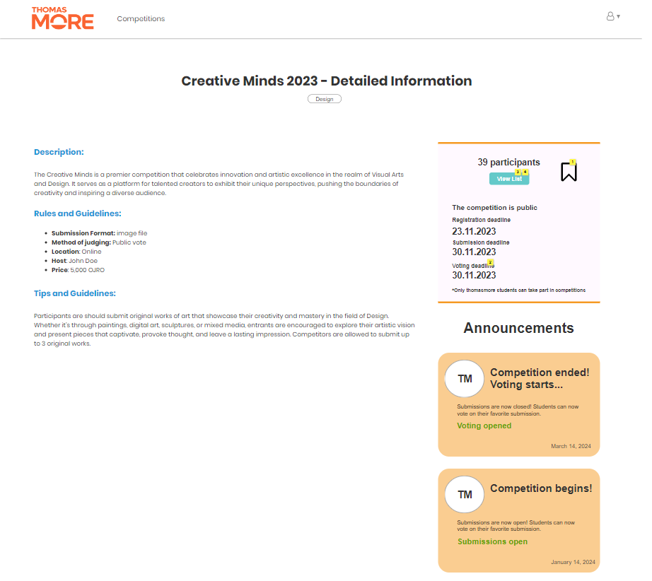

CompeteMore



CompeteMore is a PHP based website which aims to give the students of Thomas More an easy-to-use platform for hosting and participating in competitions. To create this website I teamed up with fellow students. Firstly the design stage, where we had to talk to the client. Analyze their needs and design prototypes.
The development of this project is still ongoing.